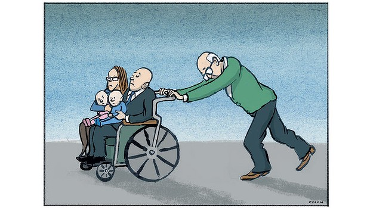

Government policy needs to catch up with older people
Date April 10, 2014
Patricia Edgar

Illustration: Andrew Dyson
The Commonwealth Treasury seems obsessed with the costs of an ageing society. The "doom and gloom" rhetoric has spilled over from health care into a debate about work and welfare. But the government is pushing the proverbial cart before the horse.
Policy needs to catch up with reality. That reality demands a transformation in attitudes to the aged and their working potential before their support structures are pulled out from under them.
Measures under consideration to rein in costs such as increasing the age for pension entitlement and accessing superannuation, means testing the family home, or having those over 55 work for the dole may be desirable given we are going to live to be 100. But Treasury’s narrow view is leading us up the garden path.
Former Age columnist Tim Colebatch described the basis of the Treasury analysis as follows: "In 2006 there were 14 million Australians aged 15 to 64, conventionally defined as working age, and 2.7 million over 65. The ratio of workers to retirees was 5.2 to 1. By 2056, on conservative assumptions, the bureau projects that those of working age will grow by half, to 21.5 million, but the number of us 65 and over will treble to 8.1 million. The ratio of workers to retirees would then be 2.6 to one. How could tomorrow’s workers be expected to finance so many retirees, especially when those aged 85 and over, with the most chronic needs for care, are projected to increase from 322,000 to 1.72 million?"
This is the analysis that is driving government actions that are likely to hit hard in the coming budget. What this analysis fails to point out is that Treasury is using an arbitrary definition of the "dependency ratio": the number of non-working dependants as a proportion to the number of productive workers.
It’s a formula of infinite flexibility, depending on the assumptions you build into it. A lower birth rate means fewer dependent children and youth, lower costs for maternity hospitals, child care benefits and schools. An increase in productivity through advanced technology or improved management systems of a mere 0.5 per cent would cover the costs of aged care and aged health expansion.
Bringing in skilled migrants may boost productivity, but since they are likely to be young, will also swell the numbers of families with dependent children. And what is dependency anyway, when we know the flows of both financial assistance and moral support run from the old to young more than from young to old?
What, even, is productivity when the GDP fails to measure the significant dollar value of caring work, voluntary work, community work, creative work, without which our economy could not function, and none of which is a monopoly of the young?
Those over 55 contribute the staggering sum of $74.5 billion a year through caring for spouses and grandchildren and in other unpaid voluntary work. Women aged 65 to 74 contributed $16 billion in unpaid work inside and outside the home; men of that age, who are fewer in number, contributed another $10.3 billion. So the suggestion advanced recently that voluntary work should qualify as work for the dole is a sensible and positive one.
In Treasury’s analysis, the first assumption to be challenged is that older people will not be working after the age of 65 and the costs of medical care, aged care, pensions, concessions, tax-free superannuation will all escalate. It is clear, given our extended life span, that 65 years is far too early for retirement and the trend is already for people to stay in work longer. There has been a massive cultural shift. Full-time leisure is not as enticing as it first seemed and the global financial crisis and loss of superannuation funds made for many a change of heart. Early retirement looks more like unemployment.
Before the GFC, most women had retired by their late fifties and only one in five went on working past 60. Now 43 per cent of women in their early 60s are still working.
And it is not only women staying at work in record numbers; by 2010, 62 per cent of men in their early 60s were still working. In 2011, 7.5 per cent of people were working in their 70s, 80s and 90s, up from 59,000 a decade ago. People are also retiring later. This revolution in the workforce is rolling on rapidly.
Economic gains from this cultural shift will change the gloomy predictions that dominate the debate about ageing and the economy. At every age, having a purpose in life is central to health and wellbeing and work often provides that purpose: this does not change with age. But the big problem is that it isn’t easy to find a job at a mature age and in difficult economic times.
The issues the government has in its sights could alleviate the economic pressures very quickly, but, and it’s a very big but, first we need to promote a culture in which working to 70 and beyond is seen as normal.
The enduring, endemic ageism of corporate human relations managers must be tackled as we encourage older workers to remain in the workforce. Surveys have shown that HR managers report they would not employ someone over 50, and 65 per cent would prefer to retrench those over 45 rather than anyone younger, regardless of their skills and performance. Ageism is holding us back.
As well, economists have too narrow a definition of productivity, which is not useful in evaluating either a "good" life or the functions that need to be filled in our modern society. In measuring wage earnings and excluding the value of voluntary work, the value of holding a family together, of caring for others, of keeping life ticking along while others work in paid employment ignores these roles that are the glue that binds a community together and makes for quality of life.
Many older people have stepped into these roles as society has become more complex. You don’t have to be a brain surgeon or even in full-time work to be a productive and valuable citizen.
My peers should be welcomed to stay longer in the workforce with flexible hours so they can continue to support themselves and so their valuable experience and expertise is put to productive use in this long stage called "old age". Then the economic reforms to pensions, superannuation and working for the dole would have validity.
Patricia Edgar is the author of In Praise of Ageing.